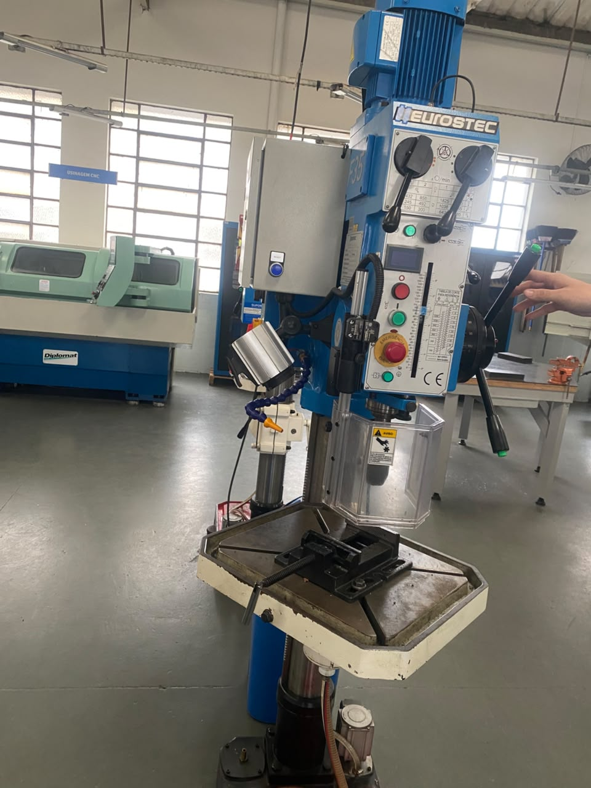
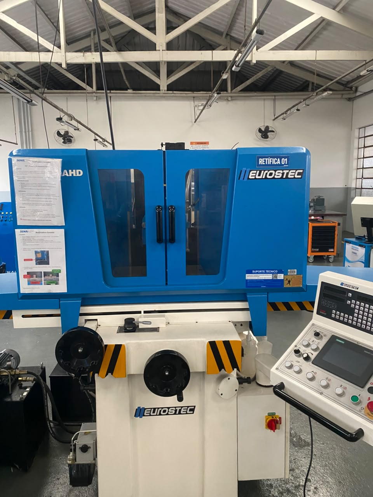
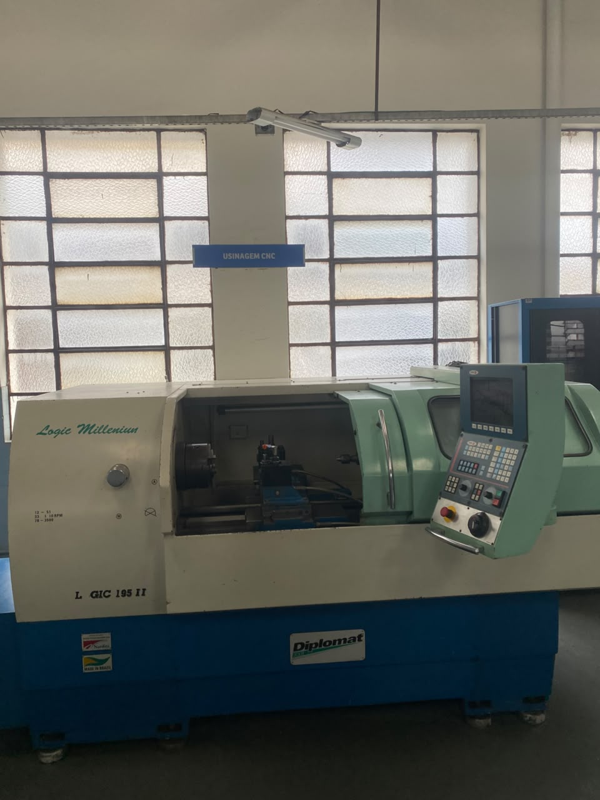
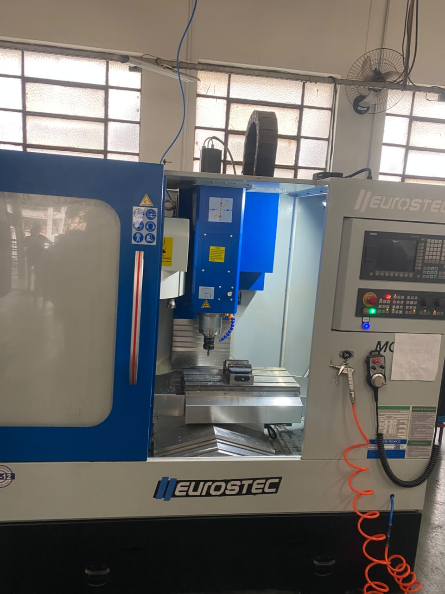

A oficina do senai e o local onde os alunos interagem diretamente com as maquinas presentes no senai. Diversas coisas do senai são produzidas na oficina, incluindo as peças utilizads pelos alunos de robotica.
Sobre
Maquinas
Essas são as maquinas utilizadas na Oficina Senai
Torno Mecânico: Faz a usinagem das pessas e desbastagem das peças.

Furadeira de Bancada:E uma furadeira mais precisa.

Fresadara: Cria superfícies planas, ranhuras, cavidades, engrenagens e contornos precisos.

Retífica: Faz o polimento da peça.

Torno CNC: E um torno "automatica" e so programar e ele faz a peça automaticamente.

Centro Usinagem: E uma fresadora "automatica" as etapas são as mesmas do torno CNC.

resutados da utilização das maquinas.